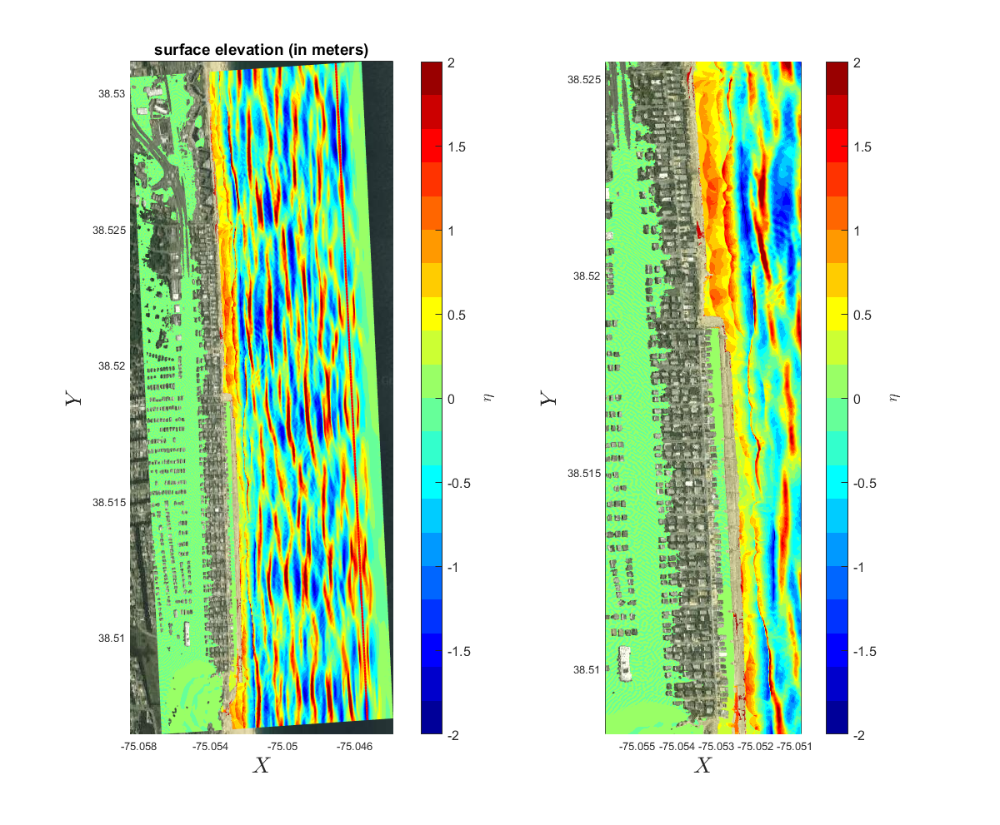

Beach Models, South Bethany Beach¶

Storm waves, wave overtopping and flooding over streets, a hypothetical storm event.

The bathymetric/topographic data combine the USGS bare earth LiDAR data building structure data

Storm waves, wave overtopping and flooding over streets, a 100 yr storm without taking into account dune erosion.

Storm waves, wave overtopping and flooding over streets, a 100 yr storm with taking into account dune erosion.
Debris tracking
Debris tracking (path)